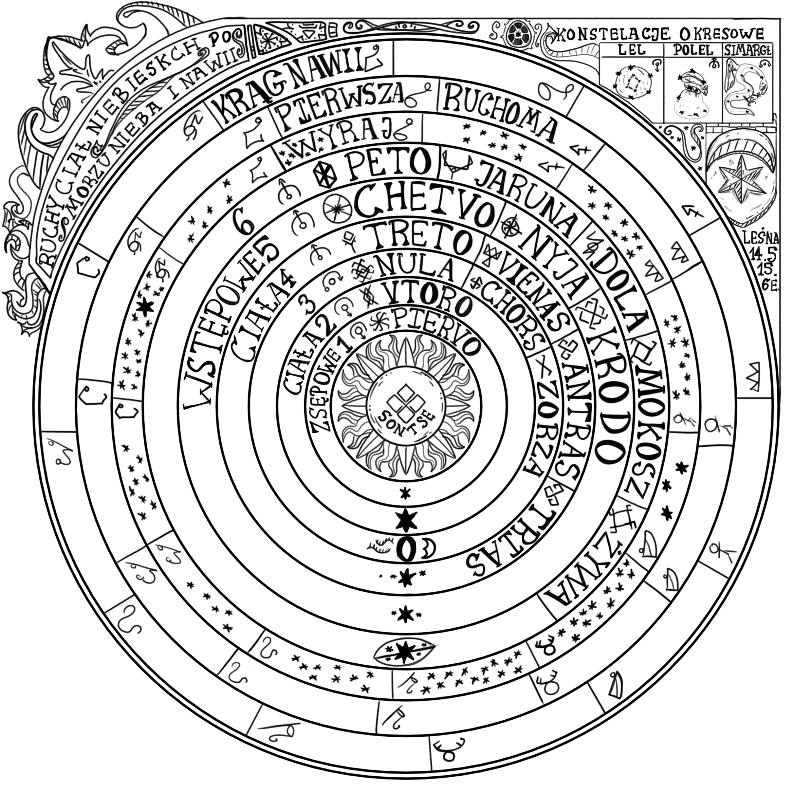

Opis planet
Tutaj wam opowiem o planetach i obserwacjach na ich temat, a także jak często są widoczne z Alatyru. Dla ułatwienia w czytaniu poniżej znajduje się również mapa planet:
Piervo
Sfera Swaroga, widoczna przez 30–40 dni w roku. Wspomaga myślenie, pobudza intelekt. Dla Drewan oznacza dobrze wykute bronie i zbroje. Rządzi konstelacjami Tarcza i Muszelka.
Vtoro (Jutrzenka)
Widoczna przez 180–220 dni w roku, niewidoczna przez kolejne 140–180. Wpływa pozytywnie na miłość i przyjemność. Przynosi szczęście Harmianom i Adgerczykom. Rządzi Strzałą i Wędką.
Treto
Widoczna około 200 dni w roku. Symbol wolności i swobody dla Demonów i Dregowiczów. Rządzi Koroną i Dzbanem.
Chetvo
Widoczna przez 235–245 dni, znika na około 165. Symbol filozofii i duchowości. Rządzi Lunetą i Panną.
Peto
Widoczna około 220 dni, niewidoczna przez 145. Symbol odpowiedzialności i dyscypliny. Obserwowana przez Kopernika podczas koniunkcji z Księżycem. Rządzi Jeleniem i Kwadrantem.
Słońce
Symbol życia i narodzin. Rządzi Niedźwiedziem. Widoczne… sami wiecie kiedy.
Księżyc
Widoczny za dnia i nocy, ale zmienia fazy i pory pojawiania się. Symbol emocji i potrzeb. Rządzi Warkoczem.
Jak odróżnić planetę od gwiazdy?
Gwiazdy migoczą, a planety świecą światłem stałym — to najprostszy sposób na ich rozróżnienie.